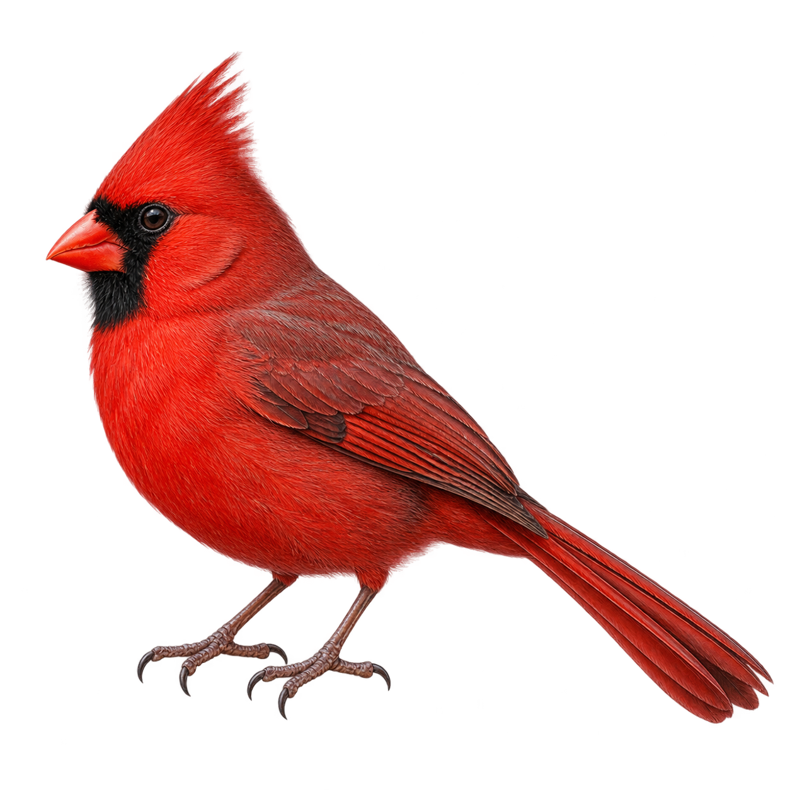

PÁGINA 01 / 05
Cardenal rojo
Cardinalis cardinalis
Una voz.
Mil formas de verla.
Spectrogram
01 / ESPECTROGRAMA
Ilustración no disponible
Acoustic Space
En movimiento
VIDEOVideo de muestra
Especie por identificar
Soundwave
FORMA DE ONDAPower Spectrum
ESPECTRO DE POTENCIA¿Qué muestra el espacio acústico?
El espacio se dibuja mientras escuchas: cada esfera aparece al llegar a su fragmento de la grabación y un trazo conecta las notas. Al pausar, la imagen se detiene; al mover la reproducción, se reconstruye hasta ese instante. Cada esfera es un fragmento de esta grabación. Su posición depende del centroide espectral, el ancho de banda y la energía RMS; su tamaño indica la energía. Las líneas siguen el orden temporal. Es una representación de características del audio, no una identificación de especies ni un mapa UMAP. Las cuatro vistas se sincronizan con el audio de muestra.
¿Qué muestra Soundwave (forma de onda)?
Muestra cómo cambia la amplitud del sonido a lo largo de toda la grabación. El tiempo avanza de izquierda a derecha: los trazos más altos indican fragmentos de mayor amplitud y los más bajos, sonidos suaves o pausas. Es un resumen de los picos de amplitud, reflejado arriba y abajo del centro. La línea vertical marca el instante que estás escuchando y el tono más oscuro señala la parte reproducida. La escala se ajusta a cada grabación; mover el volumen del reproductor no cambia la gráfica.
¿Qué muestra Power Spectrum (espectro de potencia)?
Muestra qué frecuencias destacan en el instante que estás escuchando. A la izquierda están los sonidos graves y, hacia la derecha, los agudos, hasta 12 kHz. Cuanto más alta es la gráfica en una zona, mayor es la intensidad relativa de esas frecuencias; los picos ayudan a reconocer dónde se concentra el sonido. A diferencia de Soundwave, el eje horizontal representa frecuencias, no tiempo. La vista cambia con la reproducción y se detiene al pausar. Usa una escala logarítmica relativa a esta grabación: no mide el volumen de tus altavoces ni decibelios absolutos.
EL ÁLBUM DE CAMPO